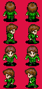
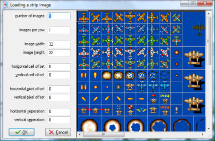

As indicated above, sprites are normally either stored as animated gif files or as strips in PNG files, in which all subimages are placed next to each other. In the second case the file name should end with _stripXX where XX indicates the number of subimages.
However, sometimes sprites are part of a larger bitmap in which the sub images can be stored next to each other or below each other and maybe there are separating lines between them. Such a strip cannot be read automatically as Game Maker will not know the size and position of the subimage. For example, the following piece of a strip file contains four different animations.

If you want to pick a certain animation out of such a file you must indicate where the images are. To this end you can choose Create from Strip or Add from Strip from the File menu in the sprite editor. After indicating the appropriate strip image file, the following form will show:

At the right you see (part of) the strip image you selected. At the left you can specify a number of parameters that specify which subimages you are interested in. Note that one or more rectangles in the image indicate the images you are selecting. The following parameters can be specified:
Once you selected the correct set of images, press OK to create your sprite. Please remember that you are only allowed to use images created by others when you have their permission or when they are freeware.
| Converted from CHM to HTML with chm2web Pro 2.85 (unicode) |